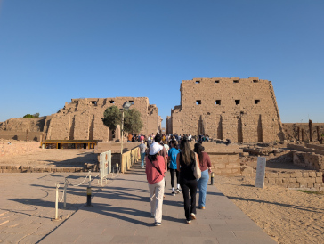
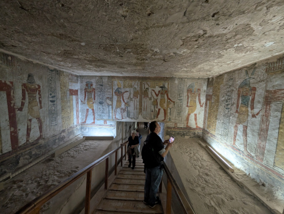
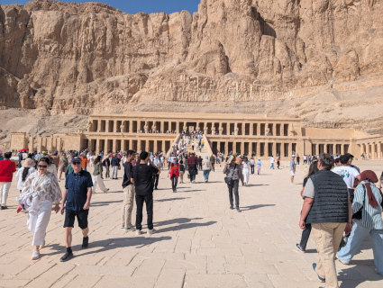

The Karnak Temple
The most Famouse temple in luxor egypt. A sprawling complex of mix of temples, pylons, chapels, and other buildings. It is actully the second most visited location right behind the pyramids of Giza.

The Luxor Temple
While Luxor is known for the Karnak Temple, the Luxor Temple is just as important of a stop, even if it's not the biggest or most popular.

The Valley of the Kings
The valley of the kings is one of the permier areas to vist as it contains 63-65 tombs of kings and other high rank officals. THe colors that are on the paintings are still in good condition!

Temple of Hatshepsut
The temple of hatshepsut is a temple to one of the only female pharaohs. Some high ranking priests tried to eraise it but it's still a major landmark to vist.
